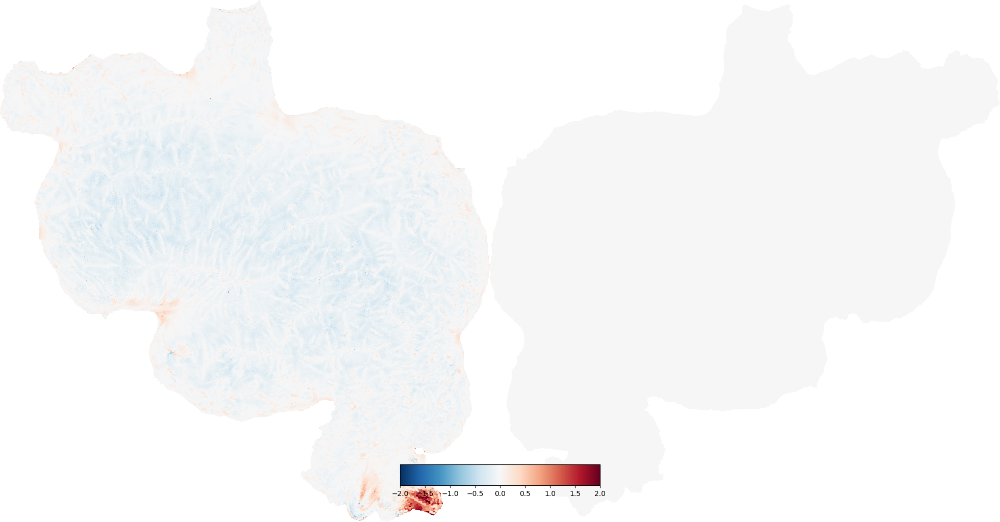
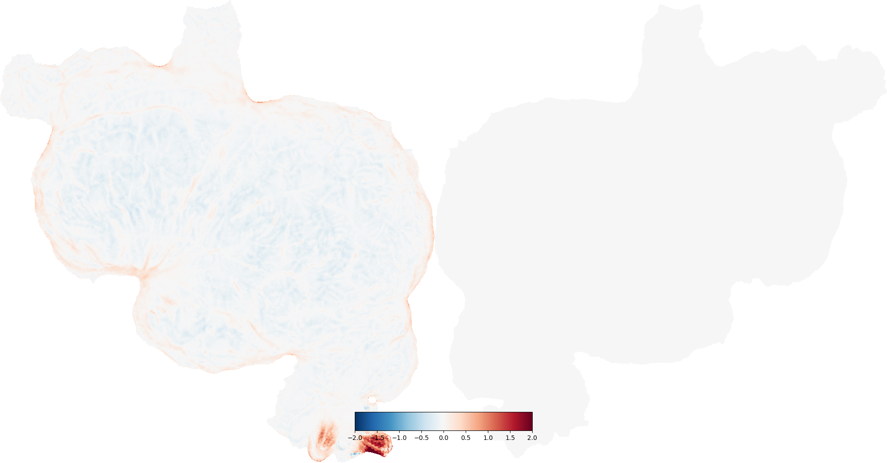

Note
Click here to download the full example code
Flatmap Distortion¶
Creating a flatmap from a folded cortical surface always introduces some distortion. This is similar to what happens when a map of the globe is flattened into a 2-D map like a Mercator projection. For the cortical surface the amount and type of distortion will depend on the curvature of the surface (i.e. whether it is on a gyrus or a sulcus) and on the distance to the nearest cut.
In general, we recommend examining data both in flattened and original 3-D space using the interactive webGL viewer, but it is also informative to visualize the distortion directly.
Here we demonstrate how to compute and display both areal distortion, which is a measure of how different the area of each triangle in the flattened mesh is from its area in the original mesh, and metric distortion, which is a measure of how different the length of each edge in the flattened mesh is from its length in the original.
- 
- 
Out:
/home/travis/build/gallantlab/pycortex/cortex/polyutils/distortion.py:57: RuntimeWarning: invalid value encountered in true_divide
vertratios /= np.bincount(self.polys.ravel(), minlength=len(self.ref))
Generating distortion surface info...
/home/travis/build/gallantlab/pycortex/cortex/polyutils/distortion.py:57: RuntimeWarning: invalid value encountered in true_divide
vertratios /= np.bincount(self.polys.ravel(), minlength=len(self.ref))
/home/travis/virtualenv/python3.7.1/lib/python3.7/site-packages/scipy/sparse/linalg/dsolve/linsolve.py:310: SparseEfficiencyWarning: splu requires CSC matrix format
warn('splu requires CSC matrix format', SparseEfficiencyWarning)
/home/travis/build/gallantlab/pycortex/cortex/polyutils/distortion.py:57: RuntimeWarning: invalid value encountered in true_divide
vertratios /= np.bincount(self.polys.ravel(), minlength=len(self.ref))
/home/travis/virtualenv/python3.7.1/lib/python3.7/site-packages/scipy/sparse/linalg/dsolve/linsolve.py:310: SparseEfficiencyWarning: splu requires CSC matrix format
warn('splu requires CSC matrix format', SparseEfficiencyWarning)
Generating distortion surface info...
/home/travis/virtualenv/python3.7.1/lib/python3.7/site-packages/scipy/sparse/linalg/dsolve/linsolve.py:310: SparseEfficiencyWarning: splu requires CSC matrix format
warn('splu requires CSC matrix format', SparseEfficiencyWarning)
/home/travis/virtualenv/python3.7.1/lib/python3.7/site-packages/scipy/sparse/linalg/dsolve/linsolve.py:310: SparseEfficiencyWarning: splu requires CSC matrix format
warn('splu requires CSC matrix format', SparseEfficiencyWarning)
import cortex
from cortex.polyutils import Distortion
import matplotlib.pyplot as plt
subject = "S1"
# First let's load the surface and compute the distortion directly using the
# Distortion class
# load fiducial (mid-cortical) surfaces
# we're ignoring the right hemisphere surface here
# the polys (triangles) are the same for the fiducial and flat surfaces
(lfidpts, lpolys), _ = cortex.db.get_surf(subject, "fiducial")
# load flattened surfaces
(lflatpts, lpolys), _ = cortex.db.get_surf(subject, "flat")
# Create the Distortion object
dist = Distortion(lflatpts, lfidpts, lpolys)
# Compute areal distortion
# this returns an array of values for each vertex, which we will put into
# a Vertex object for plotting
areal_dist = cortex.Vertex(dist.areal, subject, vmin=-2, vmax=2)
# areal distortion is in log_2 units (e.g. -1 is half the area, 1 is double)
cortex.quickshow(areal_dist, with_rois=False, with_labels=False)
# Next compute metric distortion
metric_dist = cortex.Vertex(dist.metric, subject, vmin=-2, vmax=2)
# metric distortion is in mm (e.g. -1 means flatmap edge is 1 mm shorter)
cortex.quickshow(metric_dist, with_rois=False, with_labels=False)
# Both of these distortion metrics can also be fetched easily via the pycortex
# database
# these also return Vertex objects like those we created above
areal_dist_2 = cortex.db.get_surfinfo(subject, "distortion", dist_type="areal")
metric_dist_2 = cortex.db.get_surfinfo(subject, "distortion", dist_type="metric")
plt.show()
Total running time of the script: ( 0 minutes 39.782 seconds)